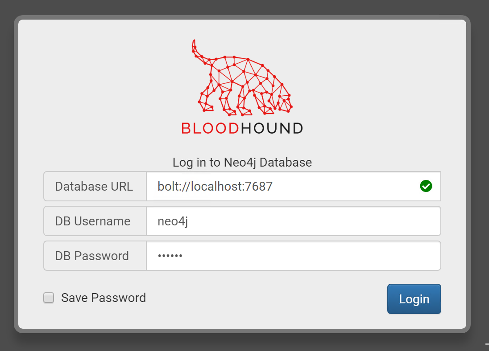

Lab 5.3: BloodHound
Objectives
- We will load the demo database included with BloodHound
- We will review a number of nodes to get comfortable with the tool
- We will explain some of the most interesting features of BloodHound
- We will run one of the most popular queries in BloodHound (Find Shortest Path to Domain Admins)
Lab Setup
You’ll only need to have your Slingshot Windows image booted for this lab.
Lab – Step-by-Step Instructions
Step 1. Start neo4j service
Open a command prompt to ensure the neo4j service is started.
PLEASE MAKE SURE YOU RUN THE FOLLOWING COMMANDS IN AN "ADMINISTRATOR" WINDOWS COMMAND PROMPT. You can launch an elevated prompt by double-clicking the link on the desktop titled "Command Prompt - Run as Administrator".
BloodHound uses the neo4j graph platform to create its visualizations. We will first verify that the "neo4j" service is running on our Windows machine. Please open an "Administrator" command prompt and run the sc query neo4j command to make sure the service is running:
C:\WINDOWS\system32> sc query neo4j
The output of the command should reveal that neo4j is currently running (the state should be "RUNNING"). If this is not the case, please try to start the "neo4j" service using the sc start neo4j command:
C:\WINDOWS\system32> sc start neo4j
2. Launch BloodHound
We will now launch BloodHound.exe, which is located in C:\Tools\BloodHound\BloodHound-win32-x64\BloodHound.exe. Please browse the folder by opening the Tools shortcut on the Desktop.
You can just double-click the BloodHound.exe executable. In the login prompt, please enter the following credentials and click Login:
- Username:
neo4j - Password:
sec560

3. Review the initial BloodHound graph
In the next window, you will see an initial "default" graph, which lists the users that are members of Domain Admin groups. Let's click the DOMAIN ADMINS@TOKYO.JAPAN.LOCAL entry, which will provide us with interesting information on this group:
- Number of members in this group
- What groups this group is a member of
4. Review the "Database Info"
So what kind of data do we have in this BloodHound database? We can review this by clicking the Database Info button (next to the Node Info. You will notice that this database includes the following information:
- 134 users and 157 groups
- 400 computers
- 19 active sessions
- 2204 ACLs
- 3541 relationships
This information powers the BloodHound graphs!
5. Finding the path to a "Domain Admin" account
Let's now assume we have compromised the account YFAN_A@TOKYO.JAPAN.LOCAL. Could we possibly use this account to obtain "Domain Admin" rights? Let's type in the account name in the search bar at the top. It should autocomplete:
Once you click the username, it will load the node individually in the graph. Please click the user icon entry in the graph, which will load all information on this specific user:
Let's now see if we can get to the "Domain Admins" group starting from this user. Please click the "Highway" icon (labeled Pathfinding) next to the search bar, which will allow us to specify an ending point we'd like to navigate to. In the Target Node search bar, please enter DOMAIN ADMINS@TOKYO.JAPAN.LOCAL. Once you click the "Play" button, this should generate an interesting graph.
The graph looks a bit messy, so let's try to get some structure in there. Please right-click the graph background and click Change Layout. You should receive a message Changed Layout to Directed and a clear path to becoming domain admin. Note that your graph might not be an exact replicate of the screenshot, but it should look similar.
5. Analyzing the path to a "Domain Admin" account
So how could we become a member of the DOMAIN ADMINS@TOKYO.JAPAN.LOCAL group?
YFAN_A@TOKYO.JAPAN.LOCALis a member of theDESKTOPADMINS@TOKYO.JAPAN.LOCALgroupDESKTOPADMINS@TOKYO.JAPAN.LOCALhas local admin rights on theAMETHYST@TOKYO.JAPAN.LOCALcomputerSQLSVC@TOKYO.JAPAN.LOCALhas a session on theAMETHYST@TOKYO.JAPAN.LOCALcomputerSQLSVC@TOKYO.JAPAN.LOCALhas local admin rights on theJADE@TOKYO.JAPAN.LOCALcomputerUYAMASAKI_DA@TOKYO.JAPAN.LOCALhas a session on theJADE@TOKYO.JAPAN.LOCALcomputerUYAMASAKI_DA@TOKYO.JAPAN.LOCALis a Domain Administrator
During an actual penetration test, our attack path would thus be:
- Connect to
AMETHYST@TOKYO.JAPAN.LOCALusing ourYFAN_A@TOKYO.JAPAN.LOCALuser - Dump in-memory credentials from LSASS, thereby compromising the credentials of
SQLSVC@TOKYO.JAPAN.LOCAL - Connect to
JADE@TOKYO.JAPAN.LOCALusing ourSQLSVC@TOKYO.JAPAN.LOCAL - Dump in-memory credentials from LSASS, thereby compromising the credentials of
UYAMASAKI_DA@TOKYO.JAPAN.LOCAL
Nice! Let's explore some other capabilities of BloodHound!
6. Using pre-built queries
As a next step in this lab, let's try running some of the pre-built queries in BloodHound! In the Navigation pane at the top left of the screen, please click the Queries button. We will run the Find Shortest Paths to Domain Admins query. Once you click the query, BloodHound will ask what specific Domain Admin group you'd like to target. Let's again try to go for the Tokyo domain admin group (DOMAIN ADMINS@TOKYO.JAPAN.LOCAL).
The result of the query will reveal a few interesting paths toward the target domain admin group. Note that this query does not take the "starting point" into account: it just looks for the shortest path between a non-domain admin user and a domain admin user. In the generated graph, you might recognize some entries that were also present in our previous path!
If you have time left, please feel free to run some of the other built-in queries as well!
Conclusion
In this lab, we demonstrated the features of BloodHound by using the built-in database. We reviewed a number of nodes, identified a path to Domain Admin, and finally ran a built-in query to identify the shortest paths in an environment.
During an actual engagement, before using the BloodHound graph, we would of course leverage one of the BloodHound ingestors to actively pull data (users and groups, computers, sessions...) from the target environment.